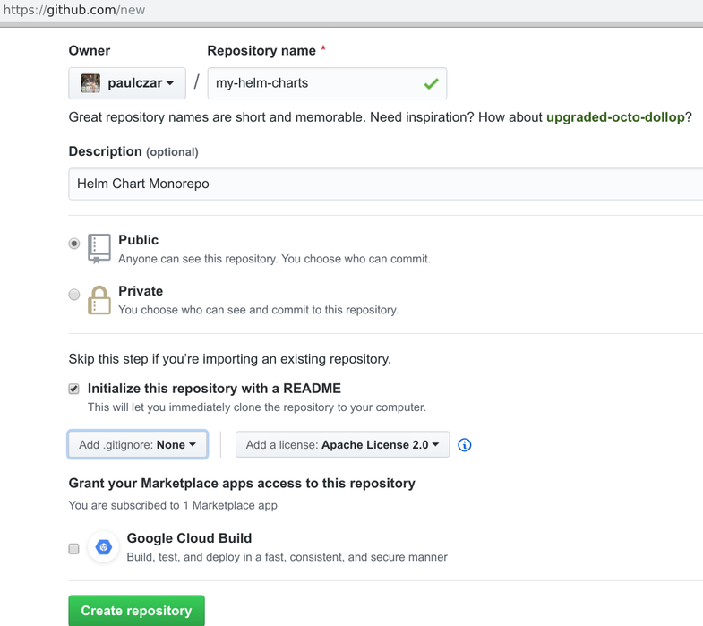
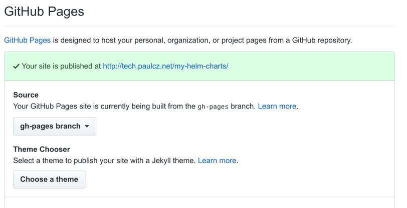
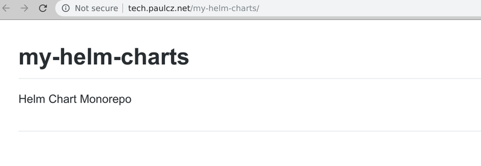
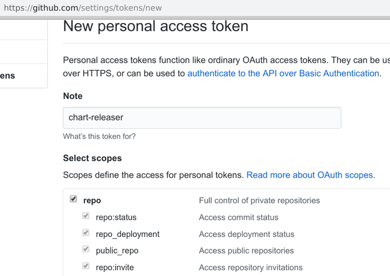
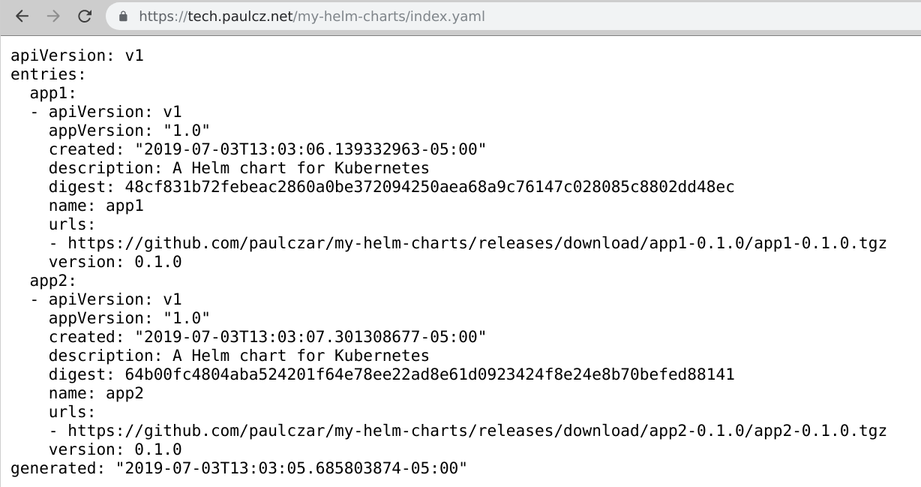

July 3, 2019
Introduction
Welcome to a three part blog series on Creating a Helm Chart Repository. In part 1 I will demonstrate creating a Helm chart repository using GitHub nd GitHub ages. In part 2 I will add Automation to automatically update the repository, and in part 3 I will add testing for changes to the charts themselves.
Helm is the defacto tool for packaging, sharing, and running Kubernetes Manifests. I’m going to assume you know the basics of Helm and have used it before. There’s plenty of great introductory topics around.
You can host and share Helm Charts (packages) via a Helm Repository which is effectively a static website with an index.yaml providing metadata and links to the Helm Packages.
This makes hosting a repository perfectly suited to running in GitHub ages, s3, google cloud storage, etc. I like to use GitHub ages as it allows your source code and repo to live effectively in the same place.
I will walk you through creating a new GitHub roject hosting multiple Helm charts and demonstrate how to set up Continuous Integration with CircleCI to automatically test and publish new changes to your Helm Charts.
Create a new GitHub epository
Log into GitHub nd create a new repository called my-helm-charts. I chose to have GitHub reate it as with an Apache2 License.

You can now clone down this repository and get to work:
$ git clone git@github.com:paulczar/my-helm-charts.git
Cloning into 'my-helm-charts'...
remote: Enumerating objects: 4, done.
remote: Counting objects: 100% (4/4), done.
remote: Compressing objects: 100% (3/3), done.
remote: Total 4 (delta 0), reused 0 (delta 0), pack-reused 0
Receiving objects: 100% (4/4), 4.52 KiB | 4.52 MiB/s, done.
$ cd my-helm-charts
$ tree
.
├── LICENSE
└── README.md
0 directories, 2 files
You can see we have a default LICENSE file and a default README.md, we can leave them alone for now. Your next step is to create a couple of Helm charts. Since this is purely for demonstration purposes they don’t have to be overly functional charts which means we can just use the default boilerplate created by helm create.
You do have helm installed right?
$ mkdir charts
$ [Helm](https://helm.sh) create charts/app1
Creating charts/app1
$ [Helm](https://helm.sh) create charts/app2
Creating charts/app2
$ tree
.
├── charts
│ ├── app1
│ │ ├── charts
│ │ ├── Chart.yaml
│ │ ├── templates
│ │ │ ├── deployment.yaml
│ │ │ ├── _helpers.tpl
│ │ │ ├── ingress.yaml
│ │ │ ├── NOTES.txt
│ │ │ ├── service.yaml
│ │ │ └── tests
│ │ │ └── test-connection.yaml
│ │ └── values.yaml
│ └── app2
│ ├── charts
│ ├── Chart.yaml
│ ├── templates
│ │ ├── deployment.yaml
│ │ ├── _helpers.tpl
│ │ ├── ingress.yaml
│ │ ├── NOTES.txt
│ │ ├── service.yaml
│ │ └── tests
│ │ └── test-connection.yaml
│ └── values.yaml
├── LICENSE
└── README.md
9 directories, 18 files
Push these changes to git:
echo ".deploy" >> .gitignore
$ git add .
$ git commit -m 'Initial Commit'
[master 2172141] Initial Commit
18 files changed, 524 insertions(+)
...
...
$ git push origin master
Enumerating objects: 27, done.
Counting objects: 100% (27/27), done.
Delta compression using up to 4 threads
Compressing objects: 100% (24/24), done.
Writing objects: 100% (26/26), 4.72 KiB | 536.00 KiB/s, done.
Total 26 (delta 8), reused 0 (delta 0)
remote: Resolving deltas: 100% (8/8), done.
To github.com:paulczar/my-helm-charts.git
abdcced..2172141 master -> master
Publish your Helm Repository
Prepare GitHub ages
We’re going to use a combination of GitHub ages and releases to host our Helm Repository. Therefore we need to ensure we have GitHub ages enabled on the git repo and to create an empty gh-pages branch.
You can create an empty gh-pages branch by creating an orphan branch like so:
$ git checkout --orphan gh-pages
Switched to a new branch 'gh-pages'
$ rm -rf charts
$ git add . --all
$ git commit -m 'initial gh-pages'
git commit -m 'initial gh-pages'
[gh-pages a9ce382] initial gh-pages
18 files changed, 524 deletions(-)
...
...
$ git push origin gh-pages
Enumerating objects: 3, done.
...
...
To github.com:paulczar/my-helm-charts.git
* [new branch] gh-pages -> gh-pages
Next check that GitHub ages is enabled by clicking on your git repo settings in GitHub:

Note: I have a custom domain set up, your URL will probably be username.github.io/my-helm-charts.
After a few minutes you should have a default rendering on your README.md at the provided URL:

Introducing chart-releaser
You could use a combination of helm package and helm repo commands to construct your Helm repository by hand, or you can simplify your life by using chart-releaser which will not only create your packages, but will upload them as binaries into an appropriately versioned GitHub elease.
Download chart-releaser for your architecture [here].
Note: I’m doing this on a linux machine, so you may need to update the commands below for Mac OS.
In a new terminal download and unpackage it, moving it to an executable path:
cd /tmp
$ curl -sSL https://github.com/helm/chart-releaser/releases/download/v0.2.1/chart-releaser_0.2.1_linux_amd64.tar.gz | tar xzf -
$ mv cr ~/bin/cr
$ cr help
Create [Helm](https://helm.sh) chart repositories on [GitHub](https://github.com) ages by uploading Chart packages
and Chart metadata to [GitHub](https://github.com) Releases and creating a suitable index file
Usage:
cr [command]
Available Commands:
help Help about any command
index Update Helm repo index.yaml for the given GitHub repo
upload Upload Helm chart packages to GitHub Releases
version Print version information
Flags:
--config string Config file (default is $HOME/.cr.yaml)
-h, --help help for cr
Use "cr [command] --help" for more information about a command.
There are two commands we care about cr index and cr upload, the first will create an appropriate index.yaml and the second will upload the packages to GitHub eleases. In order to do the latter you’ll need to pass it in a GitHub oken so that it can use the GitHub PIs.
In your browser go to your github developer settings and create a new personal access token.

Create an environment variable (or a ~/.cr.yaml config file) containing the access token:
Pro-tip: put an additional space in your command right before
exportand it won’t be saved to your command history.
$ export CH_TOKEN=c4a4ed6ab91a246572b0c46c19c630ccadc1049
Create and Upload Helm Packages
Your next step is to create and upload the packages:
$ Helm package charts/{app1,app2} --destination .deploy
Successfully packaged chart and saved it to: .deploy/app1-0.1.0.tgz
Successfully packaged chart and saved it to: .deploy/app2-0.1.0.tgz
Run cr upload to create releases and upload the packages, note if it runs correctly there’s no output.
$ cr upload -o paulczar -r my-helm-charts -p .deploy
Check your GitHub epository now has a releases page with two releases:
Create and upload index file to GitHub ages
Checkout your gh-pages branch and run cr index:
$ git checkout gh-pages
$ cr index -i ./index.yaml -p .deploy --owner paulczar --repo my-helm-charts
====> UpdateIndexFile new index at ./index.yaml
====> Found app1-0.1.0.tgz
====> Extracting chart metadata from .deploy/app1-0.1.0.tgz
====> Calculating Hash for .deploy/app1-0.1.0.tgz
====> Found app2-0.1.0.tgz
====> Extracting chart metadata from .deploy/app2-0.1.0.tgz
====> Calculating Hash for .deploy/app2-0.1.0.tgz
--> Updating index ./index.yaml
There should now be a index.yaml file containing the details of your Helm packages and the path to their archive:
$ cat index.yaml
apiVersion: v1
entries:
app1:
- apiVersion: v1
appVersion: "1.0"
created: "2019-07-03T13:03:06.139332963-05:00"
description: A Helm chart for Kubernetes
digest: 48cf831b72febeac2860a0be372094250aea68a9c76147c028085c8802dd48ec
name: app1
urls:
- https://github.com/paulczar/my-helm-charts/releases/download/app1-0.1.0/app1-0.1.0.tgz
version: 0.1.0
app2:
- apiVersion: v1
appVersion: "1.0"
created: "2019-07-03T13:03:07.301308677-05:00"
description: A Helm chart for Kubernetes
digest: 64b00fc4804aba524201f64e78ee22ad8e61d0923424f8e24e8b70befed88141
name: app2
urls:
- https://github.com/paulczar/my-helm-charts/releases/download/app2-0.1.0/app2-0.1.0.tgz
version: 0.1.0
generated: "2019-07-03T13:03:05.685803874-05:00"
Commit this to git and then wait a few minutes and check that it exists in your GitHub ages url:
$ git add index.yaml
$ git commit -m 'release 0.1.0'
[gh-pages 696df18] release 0.1.0
1 file changed, 23 insertions(+)
create mode 100644 index.yaml
$ git push origin gh-pages
...
To github.com:paulczar/my-helm-charts.git
75f1fe8..696df18 gh-pages -> gh-pages
Check it exists in GitHub ages:

Test your new Helm Repostiory
Note: To do this you’ll need a Kubernetes cluster with Helm’s tiller installed, but you already know how to do that right?
$ helm repo add my-helm-charts https://tech.paulcz.net/my-helm-charts
"my-helm-charts" has been added to your repositories
$ helm install --name test --namespace test my-helm-charts/app1
NAME: test
LAST DEPLOYED: Wed Jul 3 13:17:32 2019
NAMESPACE: test
STATUS: DEPLOYED
RESOURCES:
==> v1/Deployment
NAME READY UP-TO-DATE AVAILABLE AGE
test-app1 0/1 1 0 0s
==> v1/Pod(related)
NAME READY STATUS RESTARTS AGE
test-app1-7b575d95f6-zhlh2 0/1 ContainerCreating 0 0s
==> v1/Service
NAME TYPE CLUSTER-IP EXTERNAL-IP PORT(S) AGE
test-app1 ClusterIP 10.100.200.213 <none> 80/TCP 0s
NOTES:
1. Get the application URL by running these commands:
export POD_NAME=$(kubectl get pods --namespace test -l "app.kubernetes.io/name=app1,app.kubernetes.io/instance=test" -o jsonpath="{.items[0].metadata.name}")
echo "Visit http://127.0.0.1:8080 to use your application"
kubectl port-forward $POD_NAME 8080:80
Check that it deployed ok:
$ kubectl -n test get all
NAME READY STATUS RESTARTS AGE
pod/test-app1-7b575d95f6-zhlh2 1/1 Running 0 42m
NAME TYPE CLUSTER-IP EXTERNAL-IP PORT(S) AGE
service/test-app1 ClusterIP 10.100.200.213 <none> 80/TCP 42m
NAME READY UP-TO-DATE AVAILABLE AGE
deployment.apps/test-app1 1/1 1 1 42m
NAME DESIRED CURRENT READY AGE
replicaset.apps/test-app1-7b575d95f6 1 1 1 42m
Clean up:
$ helm delete --purge test
release "test" deleted
Update the README.md with instructions on using
switch back to your master brach:
$ git checkout master
Edit your README.md to provide details on how to use charts from your repository:
# My [Helm](https://helm.sh) Charts
This repository contains [Helm](https://helm.sh) charts for various projects
* [Application 1](charts/app1/)
* [Application 2](charts/app2/)
## Installing Charts from this Repository
Add the Repository to Helm:
helm repo add my-helm-charts https://tech.paulcz.net/my-helm-charts
Install Application 1:
helm install my-helm-charts/app1
Install Application 2:
helm install my-helm-charts/app2
Commit the change up to GitHub:
$ git add README.md
$ git commit -m 'update readme with instructions'
$ git push origin master
...
Conclusion
That’s the end of Part 1 of this three part series. In future posts I will demonstrate adding automation and testing to this Helm chart repository.